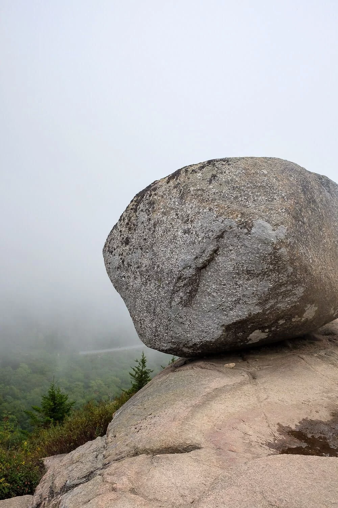
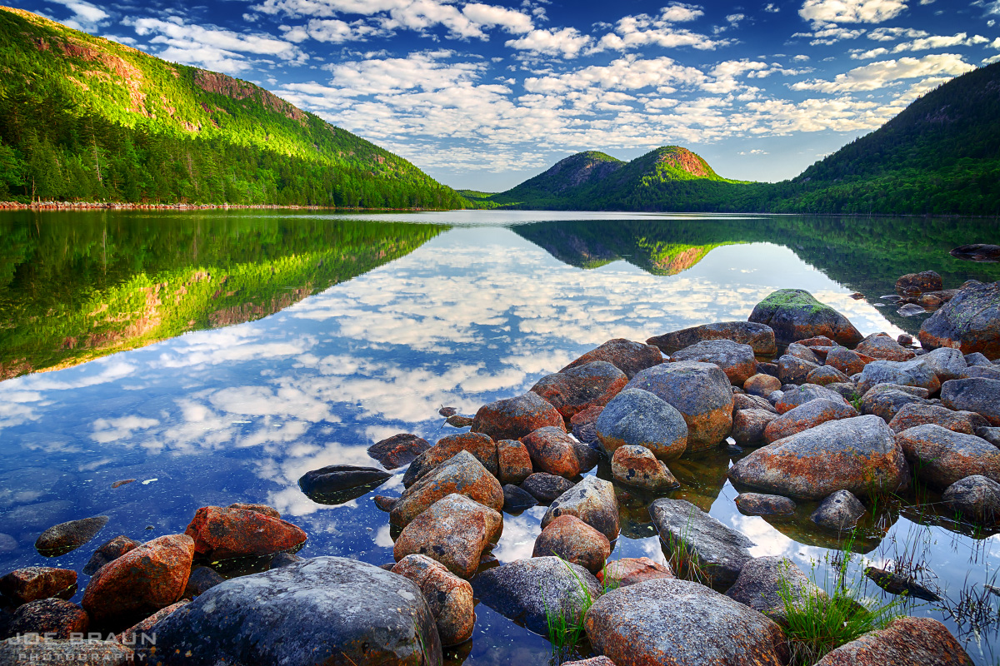
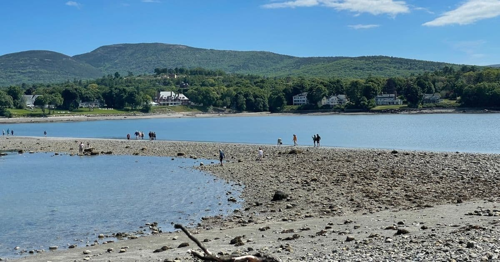

Lodging
Day 5
South Bubble + Jordan Pond + Optional Bar Island
Timing
| Time | Activity |
|---|---|
| 7:00 AM | Early breakfast — beat the parking rush |
| 7:45 AM | Drive to Bubble Rock pull-off |
| 8:00 AM – 10:00 AM | South Bubble hike (~1.5 mi RT, steep & rocky) |
| 10:30 AM | Jordan Pond Path (partial loop OK) |
| 12:00 PM | Optional popovers & tea at Jordan Pond House |
| 1:30 PM | Hotel reset — pool, rest, lunch |
| 4:00 PM | Optional Bar Island walk (~1.9 mi RT, tide-dependent) |
| 6:30 PM | Dinner in Bar Harbor |
Parking
Lot strategy
- Bubble Rock pull-off: Bubble Rock Parking on Park Loop Road — arrive early.
- Jordan Pond House: Jordan Pond House lot fills by mid-morning in summer.
- Bar Island: Park on Bridge Street in Bar Harbor near the land bridge.
Reminder
Jordan Pond is drinking water
No swimming in Jordan Pond — it supplies local drinking water. Wading is also discouraged. Enjoy the views from shore.
Places & Directions
Hike start
Bubble Rock Parking
Bubble Rock Parking, Park Loop Road, Acadia National Park, MEPopovers
Jordan Pond House
Jordan Pond House, Acadia National Park, METide walk
Bar Island Trail / Bridge Street
Bridge Street, Bar Harbor, ME 04609Land bridge to Bar Island — only at low tide.
Plan
Morning
South Bubble & Bubble Rock
- Short but steep and rocky climb — ~1.5 miles round trip.
- Bubble Rock: Glacial erratic perched on the cliff edge — classic Acadia photo.
- Views over Jordan Pond and the surrounding peaks.
- Keep kids close on exposed ledges; good hiking shoes essential.
Late morning
Jordan Pond Path
- Flat, scenic loop around the pond — do a partial section if short on time.
- Boardwalks and carriage roads near the south end.
- Classic view of the Bubbles reflected in still water.
Midday
Jordan Pond House popovers (optional)
- Acadia tradition — popovers with jam and butter, or lobster stew.
- Reservations recommended in peak season; walk-in wait can be long.
Afternoon
Hotel reset
- Recovery time after yesterday's sunrise marathon.
- Pool, snacks, naps — recharge for the second half of the trip.
Late afternoon
Bar Island (optional, tide-dependent)
- Natural land bridge exposed ~1.5 hours before and after low tide.
- ~1.9 mile round trip from Bridge Street in Bar Harbor.
- Views back toward town and the harbor — leave plenty of time before tide covers the bridge.
Trails
South Bubble & Jordan Pond Loop
Steep rocky ascent to Bubble Rock with optional connection to Jordan Pond.
View on AllTrailsJordan Pond Path
Mostly flat shoreline path. Partial loop is perfectly fine with kids.
View on AllTrailsBar Island Trail
Tidal walk — only cross the land bridge during safe low-tide windows.
View on AllTrailsPhoto Gallery



Videos
Acadia Always — Documentary
Acadia Highlights (Jordan Pond & Bubbles)
Confirm before you go
Day 6 prep — Long Pond
- Canoe/kayak reservation: Confirm rental time at National Park Canoe & Kayak Rentals (145 Pretty Marsh Road).
- Fishing license: Adults need a Maine license for Day 6 paddling/fishing.
- Check low tide times tonight if doing Bar Island tomorrow isn't an option today.
Kids age 10 and under must wear a PFD on the water at all times.